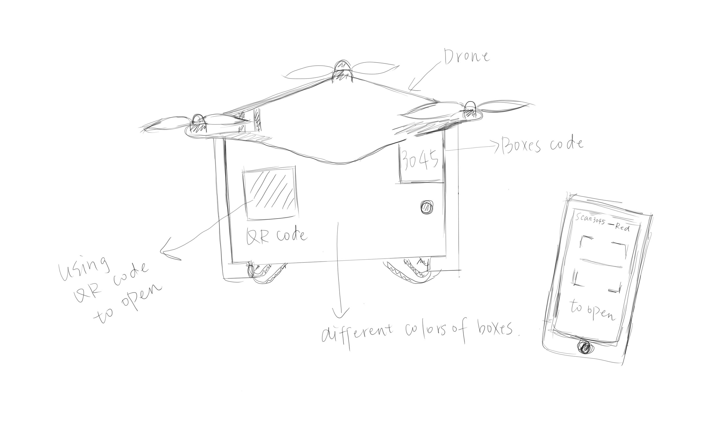
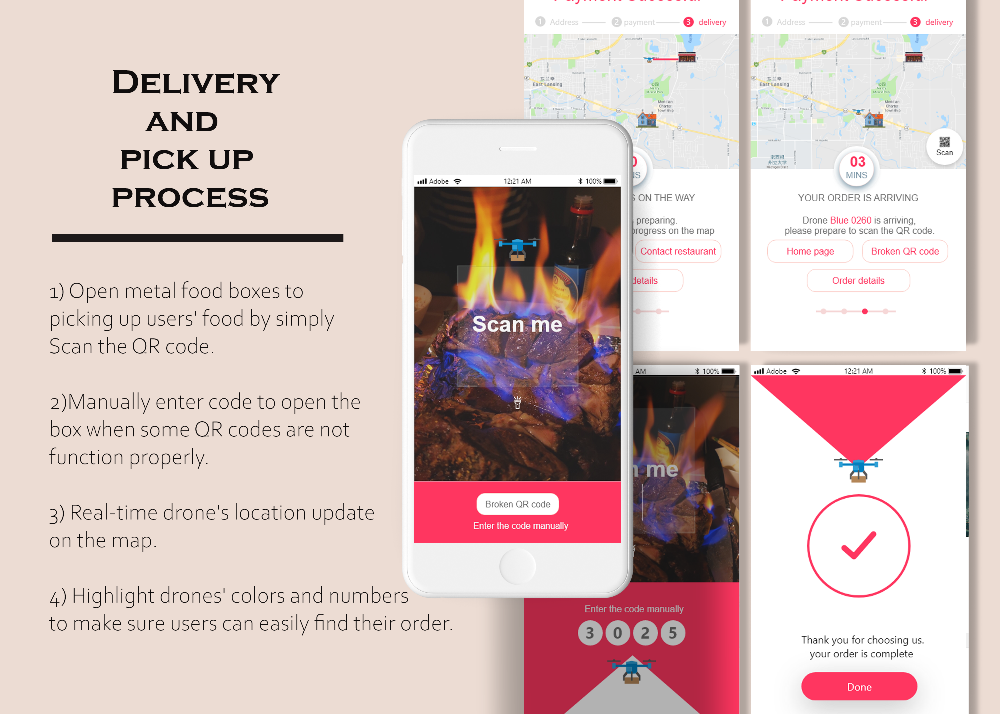

"Flying Kitchen"
-The first time approach of UI/UX design.
Project Type
Individual Project
Project Goal
Making a faster, safer and cheaper take-out food experience with drone delivery.
Overview
Flying Kitchen is a mobile application that works with drone delivery to provide lower-cost delivery by saving delivery staff and faster delivery by avoiding traffics along the road.
Time
SEP 2018 - OCT 2018
Involvement
Product Designer
Tools
Adobe XD
Adobe Photoshop
Adobe Illustrator
Instructor
Susan Wyche, Professor of MI420
INTRODUCTION
The design methodology of this product
is to build a better interface to adopt the idea of drone delivery.
During this short period project, I conducted a total of 3 interviews with 2 drone lovers and 1 New York young professional who order food a lot using food delivery application.
I was trying to understand the problems that drone delivery service are facing. There are a few insights I discovered along the way:
01. How do they make the drop? Where do they deliver the item?
02. What's the difference to deliver an item between an apartment building located in downtown New York and a house located in suburban Michigan?
03. How the machine secure buyer's items?
04. How the buyer recognizes their package?
INITIAL IDEAS

To adopting the drone delivery environment, an application might able to fix a part of the challenges,
but not all of them. Therefore, I decided to redesign the drone first to better work with the application.
01. The color of the drone/the box appears to be different high saturated colors for users to target them easier.
Users will receive the color and the number that appears on the drone through their order detail.
02. The order items contained by a locked metal box which build in under the drone.
Users open the locked box by scan the QR code using the application.
APPLICATION PROTOTYPE

Design decisions are made during the prototyping phase:
Through the paper prototype to low fidelity prototype:
01. Simplified the payment process
02. Added more features to build better filter functions,
including prices, delivery methods, store's open or closed status, and locations.
03. Simplified the landing page, deleted the redundant user profile and search in the map function.
Through the low fidelity to high fidelity:
01. Created visual attraction by changing the low-saturated blue to high-saturated pink.
02. Increasing the element size on the landing page,
splitting it into 4 parts: Searching restaurants, recent order (restaurants), popular restaurants and the navigation.
03. Adding password features to manually pick up the delivery
(in case that the QR code function not working properly.


{kind=link}
{kind=link}